This jig holds a wafer dead-centred on its segment while the glue cures. Two printed fences slide toward each other on one threaded rod that passes straight through the segment's keyhole — the same axis that runs under the centre of the wafer. Tighten one wing nut and both fences seat against the segment, never the wafer: the wafer just floats in two curved slots, caught on all sides, squeezed by nothing.
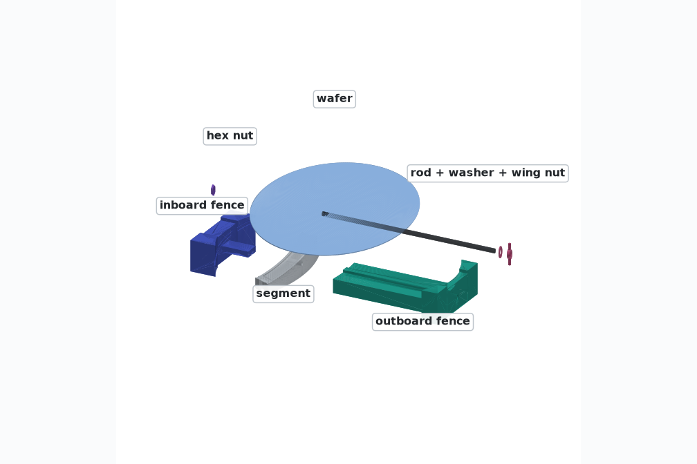
| Part | Where | Notes |
|---|---|---|
| Outboard fence | stl/cure_jig_outboard.stl | 211 g · 6 h 18 m — gcode is already in gcode/ |
| Inboard fence | stl/cure_jig_inboard.stl | 107 g · 3 h 24 m |
| #10-24 threaded rod, cut to 345 mm | Home Depot, 36" stick | hacksaw + deburr the cut end so it threads |
| #10-24 hex nut ×1 | Home Depot | lives inside the inboard fence — you'll never touch it again |
| #10 washer + #10-24 wing nut | Home Depot | or print stl/cure_jig_knob.stl instead of the wing nut |
| 91% IPA or denatured alcohol | cleaning. Never acetone on the print. |
Run a 5 mm (or 13/64") bit through the segment's keyhole — printed holes come out a touch small. It's the radial hole in the outer face, 12.6 mm above the bottom, and it goes all the way through.
Segments printed before Rev B.3 have a blind hole at the wrong height — drill through from the outer face at the new height and they're current.
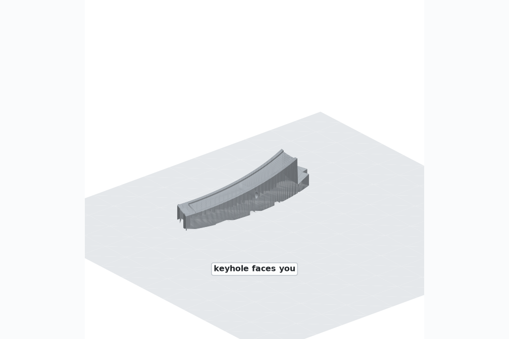
Cut the rod to 345 mm. Push the hex nut into the six-sided pocket in the back of the inboard fence. Flats are vertical, it only goes in one way, and the rod will hold it captive forever.
Dry-run the whole assembly once without a wafer so the first real bond is boring.
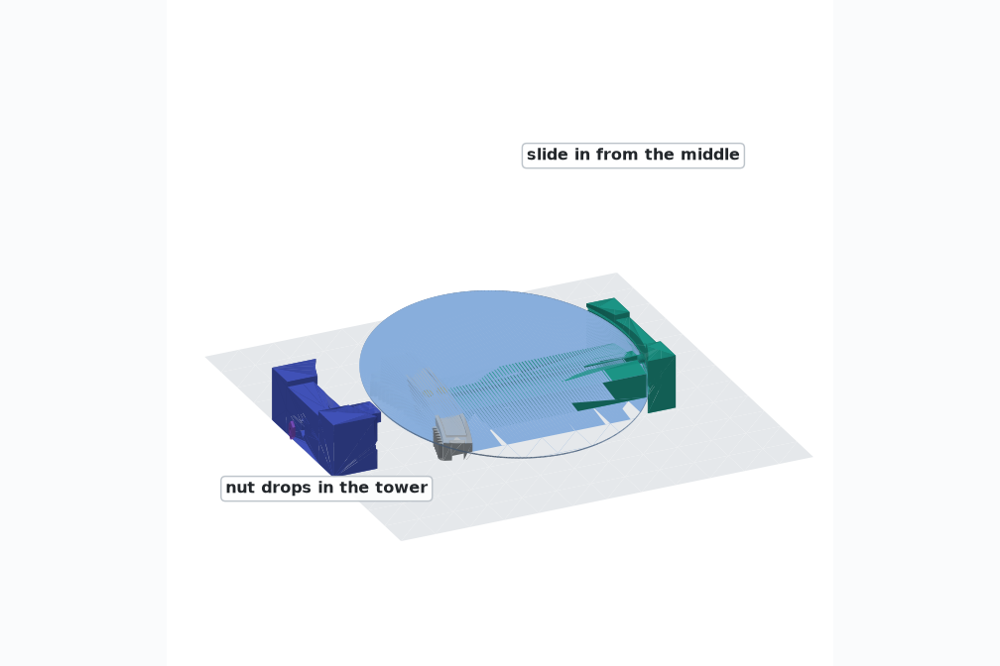
One segment, flat bottom down, keyhole facing you. Wipe the land and pocket with alcohol.
Two short beads of PL Premium Max, in the recessed pocket, near its middle. Don't overfill — the pocket is the depth stop, and more glue is worse, not better.
Tape path? You don't need this jig — tape grabs instantly. This jig is for glue that needs a day.
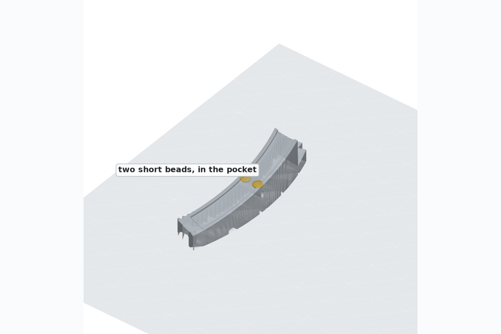
Hold it by the edges only and set it on the segment. Within a millimetre is plenty — the jig does the centring, not you. Don't press anywhere.
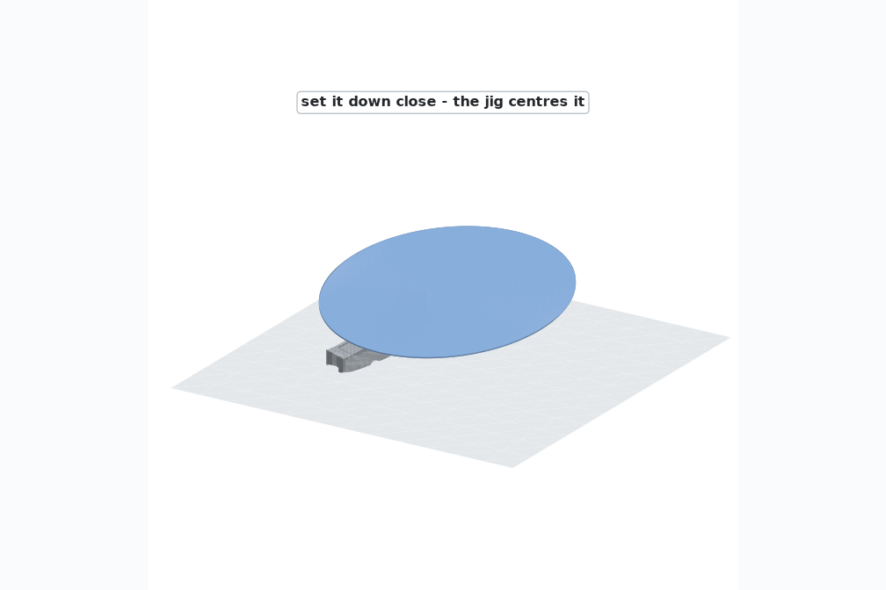
From outside, on the keyhole axis, until its nose stops hard against the segment. The wafer edge slips into the curved slot as it arrives.
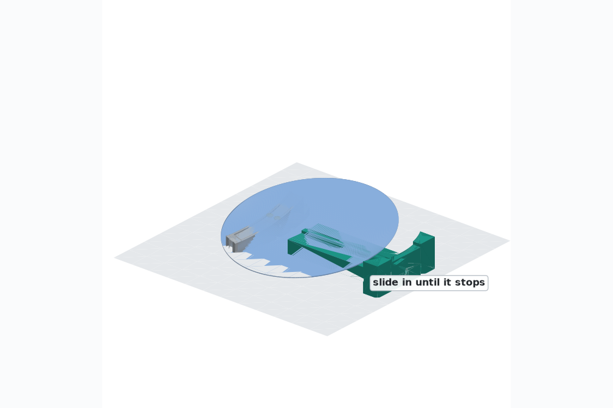
Same move from the middle of the ring, until its prong stops against the segment's inner wall.
Push the rod in from the outside: fence → keyhole → fence, then spin it a few turns into the captive nut.
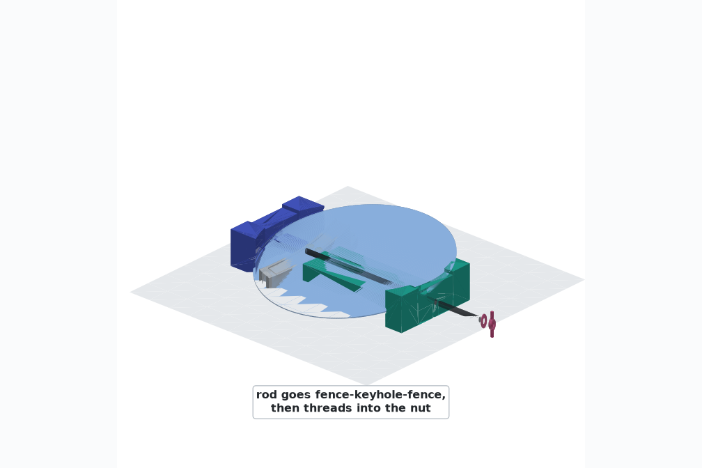
Washer on, wing nut on, and stop at finger-tight. You are seating two plastic noses against a plastic segment — there is nothing to torque.
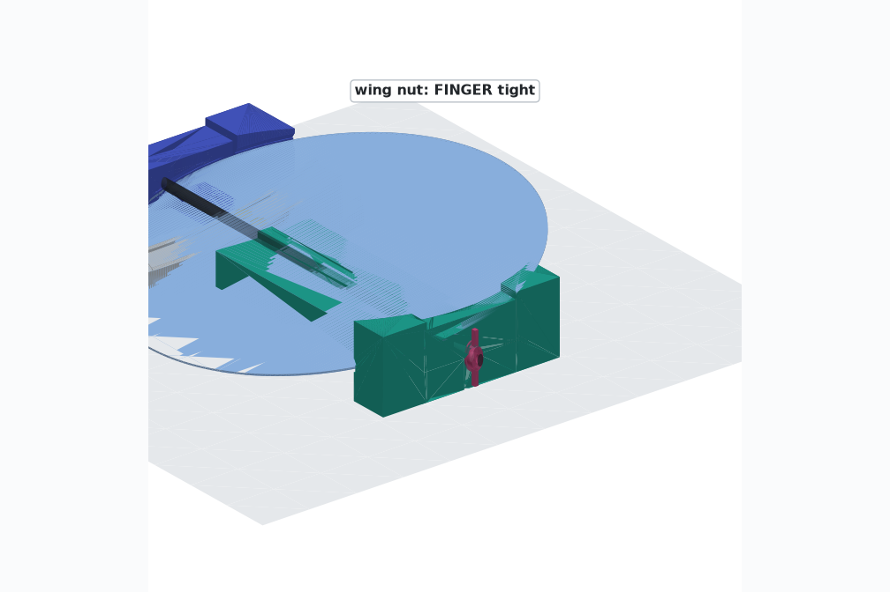
Then back the rod out, slide both fences straight off, and move to the next segment. The jig is reusable for all nine.
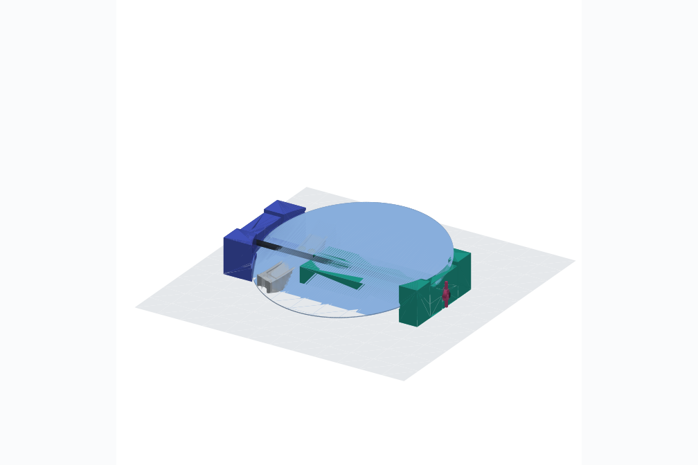
The keyhole sits on the wafer-centre meridian, so the rod runs directly beneath the centre of the wafer, and both slot walls are arcs drawn about that same centre. When the fences hit their stops, the pocket they form is the nominal wafer position: ±0.15 mm radially, about ±0.30 mm sideways (the wings wrap 30° of rim on each side), and the lips block any lift at 1.6 mm. Gravity settles it against the same walls every time.
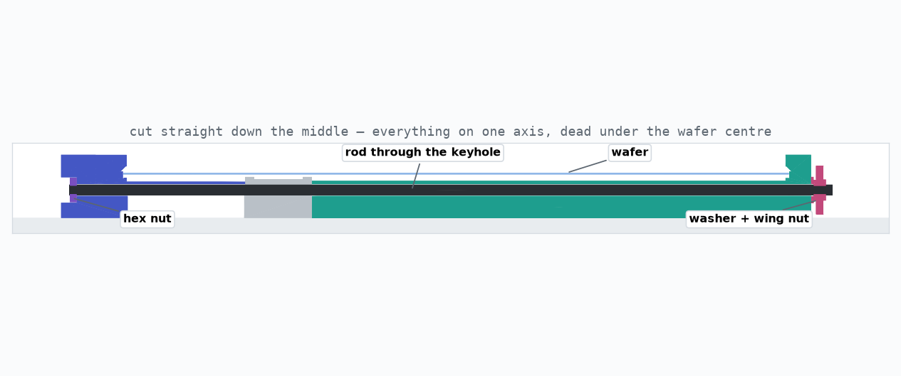
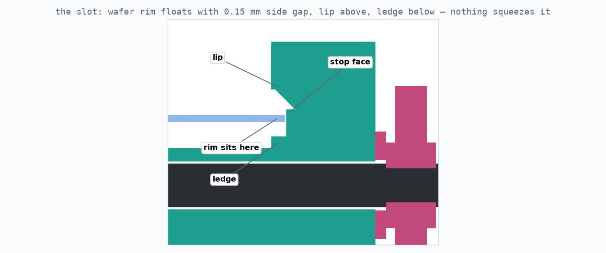
Back to the traveler · spec in CLAUDE.md · every picture and video on this page is rendered from the same CAD that makes the STLs.